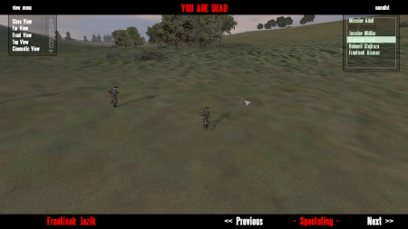

| Autor : Kegetys |
Stáhnout script Zpìt na scripty |
| Spectator skript pre MP hry | |
|
Kegetys vytvoril skript pre sledovanie ostatnıch hráèov v MP hrách (pomocou dialógového okna) po zabití.
 Správnou úpravou sa dá skript nastavi� tak, aby sledova� hráèov mohla napr. nezainteresovaná strana (napr. civilisti). K¾úèovú vec, ktorú treba nastavi�, je pole DeathCamArray v súbore onPlayerRespawnAsSeagull.sqs, do ktorého sa pridajú mená všetkıch hráèov, ktorıch chceme sledova�. TonyHawk |
|